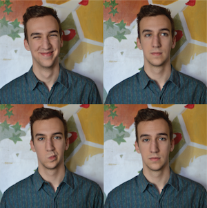

I grew up in Moultrie, Georgia surrounded by sharp objects. I went to MIT where I studied mechanical engineering and film theory.
I'm currently working at the sainsbury wellcome center at UCL in the Mrsic-Flogel group applying control theory and complex network methods to better understand neural dynamics. see more here.
I'm living in Islington, London and going on lots of adventures
in the past:
researcher at the center for bits and atoms
undergraduate thesis at the MIT nonlinear dynamics lab
master's thesis at Cambridge engineering
master's thesis at Imperial biomathematics
thanks for stopping by